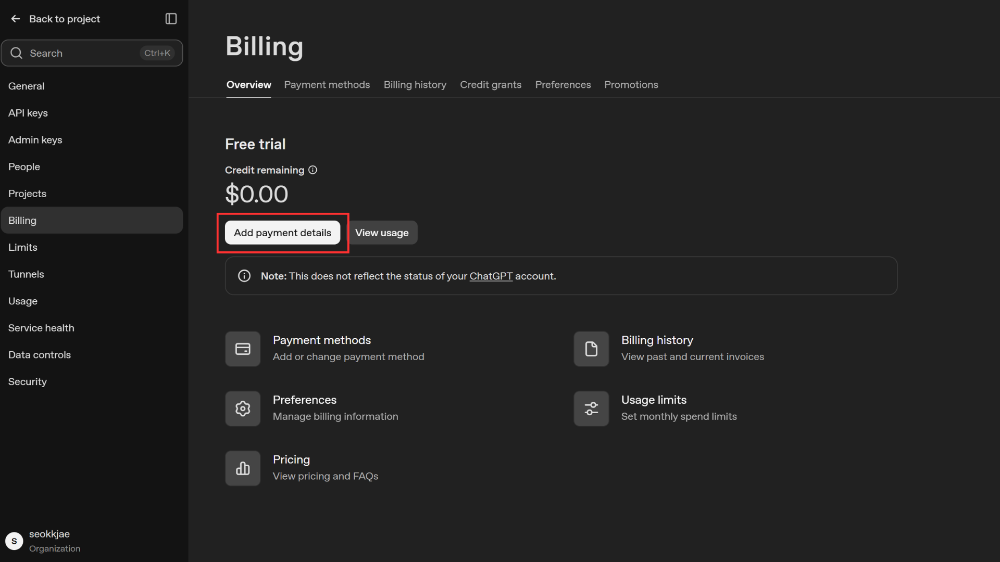
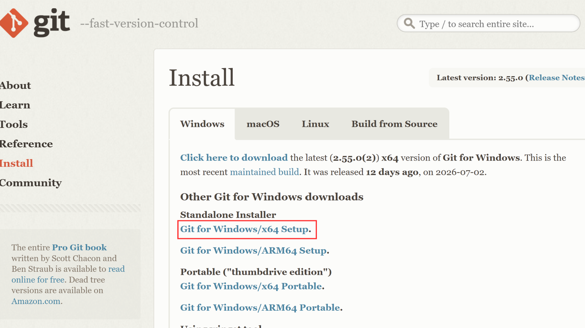
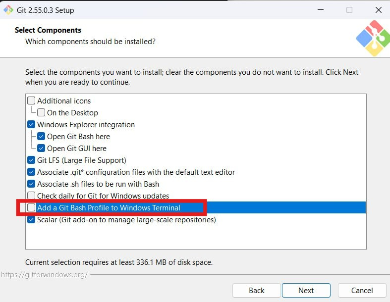
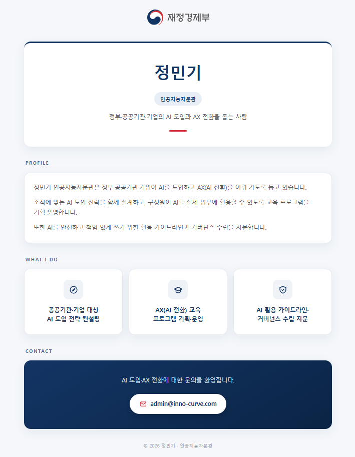

Day 1 · AI 개념과 개발 환경 구축 — 실습
이론 문서에서 익힌 개념을 실제 명령어·프롬프트로 따라 하는 실습 문서입니다. STEP 1부터 순서대로 진행하십시오.
개념이 헷갈리면 각 단계의 "관련 이론" 링크로 이론 문서를 참고하세요.
GitHub(코드 저장), Vercel(배포), OpenAI(API Key), Supabase(로그인·데이터 저장)를 순서대로 준비하면 뒤 실습에서 멈추지 않습니다.(Vercel·Supabase는 GitHub 계정으로 바로 가입하므로 GitHub를 가장 먼저 만듭니다.)
- GitHub 가입
github.com에 접속해 우측 상단 "Sign up"을 클릭한 뒤 순서대로 입력합니다.(구글 계정이나 애플 계정으로도 가입할 수 있습니다 — 이 경우 "Continue with Google" 또는
"Continue with Apple"을 선택하면 이메일·비밀번호 입력 없이 해당 계정으로 바로 가입됩니다.)- 이메일을 입력하고 Continue를 누릅니다.
- 비밀번호를 입력하고 Continue를 누릅니다.
- 사용자 이름(username, 영문·숫자)을 입력하고 Continue를 누릅니다.
- 사람 확인(퍼즐)을 풀고, 입력한 이메일로 온 인증 코드를 입력하면 가입이 완료됩니다.
가입이 막히면? — 입력을 잘못해 여러 번 다시 시도하다 보면 "Too many requests"(요청이 너무 많음) 오류가 떠서 가입이 안 될 수 있습니다. 이때는 크롬의 시크릿 모드로 새 창을 열어(단축키 Ctrl+Shift+N, Mac은 Cmd+Shift+N) github.com에 다시 접속하면 가입이 정상 진행됩니다.
- Vercel 가입 (GitHub 연동)
vercel.com에 접속해 우측 상단 "Sign Up"을 클릭합니다.
- 계정 유형에서 개인 실습용 "Hobby"를 선택하고 이름을 입력한 뒤 Continue합니다.
- "Continue with GitHub" 버튼을 클릭합니다.
- GitHub 로그인 화면이 뜨면 로그인하고, "Authorize Vercel"을 클릭해 연동을 허용합니다.
- Vercel 대시보드가 열리면 가입이 완료된 것입니다.
- Supabase 가입 (GitHub 연동)
회원 로그인·데이터 저장에 쓸 Supabase도 미리 가입해 둡니다. supabase.com에 접속해 "Start your project"를 클릭합니다.
- "Continue with GitHub" 버튼을 클릭합니다.
- GitHub 로그인 화면이 뜨면 로그인하고, "Authorize Supabase"를 클릭해 연동을 허용합니다.
- Supabase 대시보드가 열리면 가입이 완료된 것입니다.(Access Token 발급과 프로젝트·키·테이블 자동 생성은 실제로 쓰는 STEP 6에서 진행합니다.)
- OpenAI 결제 등록 및 API Key 발급
platform.openai.com에 로그인(또는 가입)합니다. OpenAI API는 사용한 만큼 선불 크레딧에서 차감되는 방식이라,
키를 발급하기 전에 먼저 결제 수단을 등록하고, 최소 금액을 충전해야 키가 정상 동작합니다.- 좌측 하단(또는 우측 상단) 톱니바퀴 Settings → "Billing"으로 이동합니다.
- "Add payment details"(결제 수단 추가)를 클릭하고, 개인/법인 카드 정보를 입력해 등록합니다.
- 충전할 금액을 입력합니다 — 실습용으로는 최소 금액인 $5면 충분합니다.
- 자동 충전(정기 결제, "Enable auto recharge") 옵션은 반드시 체크 해제합니다.(잔액이 떨어질 때 카드에서 자동으로 다시 결제되는 것을 막기 위함입니다.)
- 결제를 완료하고 크레딧(잔액)이 충전되었는지 확인합니다.
- 좌측 메뉴에서 "API keys"로 이동해 "Create new secret key" 버튼을 클릭합니다.
- 키 이름을 입력하고 "Create secret key"를 클릭합니다.
- 표시된
sk-로 시작하는 키의 "Copy"를 눌러 복사한 뒤 안전한 곳에 보관하고 "Done"을 누릅니다.(이 화면을 벗어나면 키를 다시 볼 수 없습니다.)

그림 1-1. Billing의 "Add payment details"·$5 충전(자동 충전 해제) 화면과 "Create new secret key" 팝업
Claude를 Pro로 구독해 앱을 설치한 뒤, Git 하나만 먼저 손으로 설치합니다. Claude Desktop이 내 컴퓨터의 파일·명령을 채팅으로 직접 다루려면 Git이 미리 깔려 있어야 하기 때문입니다. Git만 준비되면 작업 폴더 생성부터 이후 Node.js 설치까지 전부 채팅으로 할 수 있습니다.(Git이 없으면 Claude Desktop 채팅창이 명령을 실행하지 못해 실습을 시작할 수 없습니다. 그래서 Git만 예외적으로 수동 설치하고, 나머지 도구는 모두 채팅으로 설치합니다.)
- Claude 가입 및 유료 구독 (Pro 또는 Max)
claude.ai에서 계정을 만든 뒤 아래 순서로 유료 플랜을 구독합니다.
- 로그인 후 화면 좌측 하단의 이름을 클릭하고 "Settings"를 선택합니다.
- "Billing" 탭으로 이동해 "Upgrade plan"을 클릭합니다.
- 실습 강도에 맞는 플랜을 선택하고 결제 주기를 고릅니다.(아래는 2026년 7월 기준 요금이며, 최신 금액은 결제 화면에서 확인하세요.)
- Pro — 월 $20(연간 결제 시 약 $17/월). 개념 실습·PRD 작성 등 가벼운 작업에 적당합니다.
- Max 5× — 월 $100. Pro의 약 5배 사용량. 본격 앱 제작 단계에 여유가 있습니다.
- Max 20× — 월 $200. Pro의 약 20배 사용량. 장시간 집중 제작에 적합합니다.(Max는 월간 결제만 제공되며 연간 할인이 없습니다.)
- 카드 정보를 입력하고 "Subscribe"를 눌러 구독을 완료합니다.
뒤 과정의 Claude Code는 파일을 읽고·쓰고·검증하는 작업을 반복해 토큰이 빠르게 소모됩니다. 고도화된 PRD 작성이나 앱 제작 같은 본격 단계에서는 Pro만으로는 사용량 한도에 금방 도달할 수 있습니다. 그래서 집중 제작 주간에는 Max를 권장하고, 이후 사용 빈도를 보며 Pro로 낮추는 방식을 추천합니다. 비용이 부담되면 Pro로 시작해도 되지만, 실습 중 한도에 걸리면 그날 진도가 끊길 수 있다는 점만 감안하세요. - Claude Desktop 설치 및 로그인
내 컴퓨터에 Claude 데스크톱 앱을 설치합니다.
- 브라우저에서 claude.ai/download 에 접속합니다.
- 운영체제에 맞는 설치 파일을 내려받습니다.
- Windows:
.exe설치 파일 - macOS:
.dmg파일 (Apple 실리콘·인텔 자동 감지)
- Windows:
- 내려받은 파일을 실행해 안내에 따라 설치를 완료합니다.
- Claude Desktop을 실행하고, 앞에서 유료 플랜을 구독한 계정으로 로그인합니다.
- Git 먼저 설치하기 (딱 하나만 손으로)
Claude Desktop이 채팅으로 파일·명령을 다루려면 Git이 미리 깔려 있어야 합니다. Git이 없으면 채팅창에 명령을 시켜도 실행되지 않아 실습이 시작되지 않습니다. 그래서 Git 이것 하나만 예외적으로 직접 설치합니다. (Node.js를 비롯한 나머지 도구는 다음 STEP 3에서 채팅으로 설치합니다.)
- Windows: git-scm.com/download/win 에 접속한 뒤, "Standalone Installer" 아래의 "Git for Windows/x64 Setup"을 눌러 설치 파일(
.exe)을 내려받습니다.(요즘 PC는 대부분 x64입니다. 버전 번호는 접속 시점에 따라 조금씩 다를 수 있습니다.)
그림 2-1. git-scm.com/download/win — 빨간 네모의 "Git for Windows/x64 Setup"을 눌러 설치 파일을 받습니다. 받은
.exe를 실행하면 설정 화면들이 이어집니다. 대부분은 기본값 그대로 "Next"를 누르면 되고, 구성 요소(Select Components) 화면에서는 아래 빨간 네모의 "Add a Git Bash Profile to Windows Terminal" 항목만 추가로 체크한 뒤 "Next"를 누릅니다.
그림 2-2. Select Components 화면 — 빨간 네모의 "Add a Git Bash Profile to Windows Terminal"을 체크합니다. 이 옵션은 윈도우 터미널에 Git Bash 프로필을 자동으로 등록해 주는 기능입니다. 체크해 두면 나중에 혹시 터미널을 열 일이 생겼을 때 Git Bash 환경을 훨씬 편하게 부를 수 있고, Claude Desktop 같은 외부 프로그램이 윈도우 터미널 환경을 찾아 쓸 때도 도움이 됩니다. 그 밖의 구성 요소 화면은 기본으로 체크된 상태 그대로 두고 "Next"를 누르는 것이 가장 무난하고 안정적입니다.
이 화면을 지난 뒤로는 나오는 창마다 계속 "Next"를 눌러 "Install"까지 진행하고, 끝나면 "Finish"를 눌러 마칩니다.
- macOS: 터미널(Terminal) 앱을 열고
xcode-select --install을 입력해 실행합니다. 잠시 후 뜨는 설치 팝업에서 "설치(Install)"를 누르면, Git이 포함된 Apple 명령어 도구(Command Line Tools)가 설치됩니다.(Homebrew를 이미 쓰고 있다면 터미널에서brew install git으로 설치해도 됩니다.) - 설치가 끝나면 Claude Desktop을 완전히 종료했다가 다시 실행합니다. 그래야 방금 설치한 Git을 Claude가 인식합니다.
- Windows: git-scm.com/download/win 에 접속한 뒤, "Standalone Installer" 아래의 "Git for Windows/x64 Setup"을 눌러 설치 파일(
- 작업 폴더 지정하고, 자연어로 hello-page 폴더 만들기
Claude Desktop을 실행해 채팅창에 처음 입력하려 하면, "어느 폴더에서 작업할지" 고르는 폴더 지정 화면이 먼저 뜹니다. Claude Desktop은 이렇게 지정(허용)한 폴더 안에서만 파일을 만들고 명령을 실행할 수 있어서, 이 지정을 해야 그다음부터 채팅 작업이 가능합니다. 여기서 바탕화면(Desktop)을 선택하세요.
폴더가 지정되면, 이제 폴더도 손으로 만들 필요 없이 Claude에게 시키면 됩니다. 아래 프롬프트를 붙여넣으면 Claude Desktop이 실제로 폴더를 만들어 줍니다.
프롬프트바탕화면에 hello-page 라는 폴더를 직접 만들어줘. 폴더 이름은 영문·띄어쓰기 없이 정확히 hello-page 로 해줘.
Claude가 명령을 실행해도 되는지 물으면 "허용(Allow)"을 누릅니다. 바탕화면에
hello-page폴더가 생기면 성공입니다 — 이 폴더가 만들어졌다는 것 자체가 ③의 Git 설치까지 잘 됐다는 확인이기도 합니다.(위치는 바탕화면이 가장 편하지만 어디든 상관없습니다. 다른 곳에 만들고 싶으면 "바탕화면에" 대신 원하는 경로를 알려주면 됩니다.)폴더가 안 만들어지거나 명령이 실행되지 않는다면? — 대부분 ③의 Git 설치가 제대로 안 됐거나, 설치 후 Claude Desktop을 재시작하지 않은 경우입니다. Git이 없으면 Claude Desktop은 이 폴더 만들기를 포함해 어떤 명령도 실행하지 못합니다. ③으로 돌아가 Git 설치를 끝까지(Finish) 마쳤는지 확인하고, Claude Desktop을 완전히 종료했다가 다시 실행한 뒤 이 프롬프트를 다시 붙여넣으세요.윈도우에서 바탕화면이 OneDrive로 백업되고 있어도 그대로 만들면 됩니다. 혹시 나중에 폴더를 못 찾거나 경로 관련 오류가 나면, 내 사용자 폴더(
C:\Users\내이름)에 만들어 달라고 요청하면 가장 안전합니다.
hello-page 폴더에 파일을 직접 만들고 명령을 실행해 줍니다.
이제 Git이 깔려 Claude Desktop이 명령을 직접 실행해 주므로, 터미널을 전혀 열지 않고 Node.js 설치부터 버전 확인·Git 최초 설정까지 전부 채팅으로 끝낼 수 있습니다.
- Claude Desktop 채팅으로 설치 요청
이제 대화창에 아래처럼 요청하면 Claude가 실제로 설치 명령을 대신 실행합니다.
프롬프트Node.js LTS 버전이 설치되어 있는지 확인해줘. 없으면 직접 설치해줘. (Windows면 winget install OpenJS.NodeJS.LTS, macOS면 brew install node)
Claude가 명령을 실행해도 되는지 물으면 "허용(Allow)"을 누릅니다.
- 설치 확인도 채팅으로
이어서 아래처럼 요청하면 Claude가 직접 버전을 확인해 채팅창에 결과를 보여줍니다.
프롬프트node -v, npm -v, git --version을 각각 실행해서 결과를 알려줘.
▲ 예:
v20.x.x,10.x.x,git version 2.x.x"명령을 찾을 수 없다"는 결과가 나오면, Claude에게 "Claude Desktop을 재시작해야 하니 안내해줘"라고 요청하세요. 설치 직후에는 새로 여는 프로그램부터 인식되는 경우가 많습니다.
- Git 최초 설정도 채팅으로
왜 하나요? — 코드를 저장(커밋)할 때마다 Git이 "누가 저장했는지"를 함께 기록합니다. 그래서 맨 처음 딱 한 번 내 이름·이메일을 Git에 알려 두면, 이후 저장할 때마다 자동으로 내 이름표가 붙습니다. (숙제에 미리 이름을 적어 두는 것과 같아요.) 이메일은 STEP 1에서 만든 GitHub 계정과 같게 맞추면, 나중에 GitHub에서도 내 기록으로 깔끔하게 연결됩니다.
프롬프트git config --global user.name을 "본인 이름"으로, git config --global user.email을 "본인이메일@example.com"으로 직접 설정해줘.
STEP 2에서 만든
hello-page 폴더를 향해, Claude Desktop 대화창에 "이런 페이지를 만들어 줘"라고 말하는 것이 전부입니다.
- Claude Desktop에서 새 대화 시작
Claude Desktop을 실행하고 새 대화(New chat)를 엽니다. STEP 2에서
hello-page폴더를 만들었으므로, Claude에게 그 폴더에서 작업해 달라고 하면 이 대화의 지시가 그 폴더에 반영됩니다.(폴더가 없으면 STEP 2의 "작업 폴더 만들기"를 먼저 확인하세요. 새 대화에서 폴더 지정 화면이 다시 뜨면 STEP 2에서처럼 바탕화면을 선택하면 됩니다.) - 로고 파일 준비
페이지에 넣을 로고를
hello-page폴더에 미리 저장합니다. 아래 링크를 우클릭 → "다른 이름으로 링크(대상) 저장" 한 뒤, 파일명을재정경제부.svg그대로 두고hello-page폴더에 저장하세요. - 자연어로 페이지 요청
아래 프롬프트에서 대괄호
프롬프트[ ]안을 본인 정보로 바꾼 뒤 Claude Desktop 대화창에 붙여넣습니다.([페이지 구성]·[디자인] 부분은 그대로 두면 됩니다.)바탕화면에 만든 hello-page 폴더에 나의 프로필 웹페이지를 index.html 파일 하나로 직접 만들어줘. ━━━━━━━━━━━━━━━━━━━━━━━━━━━━━━ [기본 정보] ★ 대괄호 안을 본인 정보로 바꾸세요 ━━━━━━━━━━━━━━━━━━━━━━━━━━━━━━ - 이름: [정민기] - 소속/직책: [인공지능자문관] - 한 줄 소개: [정부·공공기관·기업의 AI 도입과 AX 전환을 돕는 사람] - 담당 업무 3가지: · [공공기관·기업 대상 AI 도입 전략 컨설팅] · [AX(AI 전환) 교육 프로그램 기획·운영] · [AI 활용 가이드라인·거버넌스 수립 자문] - 이메일: [admin@inno-curve.com] ━━━━━━━━━━━━━━━━━━━━━━━━━━━━━━ [페이지 구성] — 위에서 아래 순서로 (수정 불필요) ━━━━━━━━━━━━━━━━━━━━━━━━━━━━━━ 1. 맨 위 가운데에 같은 폴더의 [재정경제부.svg] 로고를 img 태그로 2. 이름 + 직책 + 한 줄 소개가 들어간 명함 스타일 히어로 3. 소개 문단: 위 기본 정보만 바탕으로 3~4문장 4. 담당 업무 3가지를 아이콘 + 카드 형태로 5. 연락처 섹션: 이메일 버튼 (누르면 메일 앱이 열리는 mailto 링크) 6. 위 기본 정보에 없는 내용(경력, 학력, 수상 등)은 지어내서 넣지 말 것. 필요하면 나에게 물어볼 것. (AI가 가짜 정보를 채우는 것을 막는 안전장치) ━━━━━━━━━━━━━━━━━━━━━━━━━━━━━━ [디자인] ━━━━━━━━━━━━━━━━━━━━━━━━━━━━━━ - 파란색 계열, 신뢰감 있고 깔끔한 톤 - 로고 SVG 안의 색상을 추출해서 팔레트로 사용 (로고와 색이 통일됨) - 모바일 화면 기준으로 먼저 디자인하고, PC에서도 잘 보이게 - 글자가 깨지지 않도록 문서 인코딩을 UTF-8로 지정할 것 (head에 <meta charset="UTF-8"> 포함 — 빠지면 한글이 깨질 수 있음)
- 파일 생성 승인
Claude가
hello-page폴더에index.html을 만들려고 하면, Claude Desktop이 권한을 묻습니다. 내용을 확인하고 "허용(Allow)"을 누르면 파일이 실제로 만들어집니다.(매번 묻는 것이 번거로우면 "이 대화에서 항상 허용" 같은 옵션을 선택할 수 있습니다.) - 결과 확인
hello-page폴더에 생긴index.html을 더블클릭해 기본 브라우저로 엽니다. 요청한 대로 화면이 나오면 성공입니다.
그림 4-1. 브라우저로 연 index.html — 로고·명함형 히어로·담당 업무 카드·연락처가 표시된 프로필 페이지 - 이어서 화면·기능 수정하기
같은 대화창에 이어서 아래 프롬프트를 입력해, 방금 만든 페이지의 디자인과 기능을 바꿔 봅니다. "만들고 → 바로 고치는" 흐름을 체험하는 단계입니다.
프롬프트방금 만든 index.html을 직접 이렇게 바꿔줘. 기존 내용과 디자인은 그대로 유지하고, 아래 2가지만 수정해줘. 1. 명함 카드에 마우스를 올리면 살짝 떠오르면서 그림자가 진해지는 효과를 넣어줘. 2. 이메일 버튼 옆에 "이메일 복사" 버튼을 하나 추가하고, 누르면 이메일 주소가 클립보드에 복사되면서 "복사되었습니다!" 알림창이 뜨게 해줘. 다 바꾸고 나서 어디를 어떻게 바꿨는지 한 줄씩 알려줘.
브라우저에서
index.html을 새로 고침(F5)해 바뀐 화면과 버튼 동작을 확인합니다.
{kind=link}
index.html(헬로페이지)에 새 섹션으로 추가합니다.
- 시계 섹션 추가하기
같은 Claude Desktop 대화에서 아래 프롬프트를 붙여넣습니다. (기존 자기소개 내용은 그대로 두고, 그 아래에 새 섹션을 이어 붙입니다.)
프롬프트바탕화면에 만든 hello-page 폴더의 index.html에 새 섹션을 추가해줘. 기존 자기소개 내용은 절대 지우지 말고 그 아래에 이어 붙여줘. "포멀하고 세련된 디지털 시계"로 만들어줘. - 구분선 아래, 화면 가운데에 카드 형태로 시계를 배치 - 카드는 흰색~아주 연한 파란색 그라데이션 배경에, 둥근 모서리·은은한 그림자·넉넉한 여백으로 깔끔하게 - 시간 위에 작은 회색 대문자 라벨로 "CURRENT TIME" 표시 - 시:분:초를 크고 세련된 폰트로, 진한 남색(#1f2937) 글자에 숫자 사이 간격(letter-spacing)을 살짝 줘서 고급스럽게 - 그 아래에 오늘 날짜와 요일을 연한 회색으로 표시 (예: 2026년 7월 18일 토요일) - 자바스크립트 setInterval로 1초마다 부드럽게 자동 갱신 - 빨강·노랑 같은 원색이나 검정 배경은 쓰지 말고, 전체적으로 밝고 정돈된 포멀한 느낌으로
- 결과 확인
hello-page폴더의index.html을 이미 열어 두었다면 새로고침(F5), 아니면 더블클릭해 브라우저로 엽니다. 자기소개 아래에 시계 섹션이 추가되고, 초가 1초마다 바뀌면 성공입니다.
index.html은 2일차 실습에서 RAG 챗봇을 더한 뒤 Vercel로 인터넷에 공개(배포)합니다.
setInterval로 1초마다 실제로 다시 그려지게 해줘"라고 다시 요청하세요. (화면이 저절로 갱신되려면 자바스크립트가 필요합니다.)
user 테이블로 처리합니다. 비밀번호는 반드시 해시(암호화)로 저장합니다. 어려운 코딩 없이, 지금까지처럼 화면에 로그인 창을 이어 붙이고, 비밀 키를 안전하게 다루는 작은 처리 부분을 화면 뒤에 둡니다.(여기서 만든 로그인은 2일차 RAG 챗봇에서 그대로 이어받아 "내 대화·문서만 보기"로 확장합니다.)
A. 절대 안 됩니다. 비밀번호를 평문(그대로)으로 저장하면, DB가 유출될 때 모든 사용자의 비밀번호가 그대로 새어 나갑니다. 그래서 되돌릴 수 없는 해시로 바꿔 저장하고, 로그인할 때는 입력값을 같은 방식으로 해시해서 비교만 합니다. 이 실습에서도 해시 저장을 필수로 요청합니다.
- Access Token 발급 (사람이 직접, 한 번만)
STEP 1에서 가입한 Supabase(supabase.com)에 로그인한 뒤, 아래 순서로 토큰을 발급합니다.
- 오른쪽 위 프로필 아바타를 클릭하고, 뜬 메뉴에서 "Account"를 클릭합니다.
- Account 화면 왼쪽 사이드바의 ACCOUNT SETTINGS → "Access Tokens"를 클릭합니다.
- 오른쪽 위 초록색 "Generate new token" 버튼을 클릭합니다.
- "Generate New Token" 창이 열리면 Name에 알아볼 이름(예:
hello-page)을 적고, Expires in은 기본값 30 days면 충분합니다.Expires in(만료 기간)이 뭔가요? — 이 토큰이 언제까지 유효한지를 정하는 값입니다. 정해진 기간이 지나면 토큰이 자동으로 만료(무효화)되어 더는 쓸 수 없게 됩니다. 그래서 혹시 토큰이 새어 나가도 기간이 지나면 저절로 못 쓰게 되어 더 안전합니다.30 days=30일 뒤 자동 만료,7 days=7일 뒤 만료,Never=영원히 만료 안 됨. Never는 편하지만, 한 번 유출되면 계속 위험하므로 권장하지 않습니다. 이 실습은 며칠이면 끝나니30 days(또는7 days)로 두세요.※ 기간이 지나 만료되면, 위 순서로 새 토큰을 다시 발급해 다시 등록하면 됩니다. - "Generate token"을 누르면
sbp_로 시작하는 토큰이 나옵니다. 옆의 복사(Copy)를 눌러 안전한 곳에 잠깐 보관하세요.(이 화면을 벗어나면 토큰 전체를 다시 볼 수 없습니다. OpenAI 키처럼 비밀 값입니다.)
발급 창에 "Access tokens can be used to control your whole account"(계정 전체를 제어할 수 있음) 경고가 뜹니다 — 그만큼 강력한 열쇠이니 남과 공유하거나 공개 저장소(GitHub)에 올리지 마세요.
service_role만큼 강력한 관리용 열쇠입니다. 남과 공유하거나 공개 저장소(GitHub)에 절대 올리지 마세요. 아래 ①번 자연어 프롬프트에 붙여넣어 Claude Code에 등록하는 용도로만 씁니다.user 테이블 만들기는 자연어로 Claude Code에 맡깁니다. → SQL·테이블 개념은 이론에서- ① Supabase 연결(MCP) 등록 — 토큰은 사람이 직접 입력 (보안)🎯 이 프롬프트를 실행하는 목적프롬프트
Claude Code가 내 Supabase를 대신 조작(프로젝트 생성·테이블 만들기 등)할 수 있게 둘을 연결하는 통로를 만들기 위해, Claude에게 연결 설정 파일.mcp.json을 만들어 달라고 요청하는 프롬프트입니다. 강력한 열쇠인 토큰 값은 지금 비워 두고, 파일이 만들어진 뒤 내가 직접 넣습니다(채팅 기록에 토큰이 남지 않게). 터미널은 쓰지 않습니다.이 프롬프트는 Claude Code(너)가 내 Supabase를 대신 조작할 수 있게, 둘을 연결하는 통로(설정 파일)를 만들기 위해 실행하는 프롬프트야. 이 연결을 준비하기 위해 아래 작업을 해줘: 1. 바탕화면에 만든 hello-page 폴더에 Supabase 연결 설정 파일 .mcp.json 을 만들어줘. 2. 그 파일 안에 supabase 서버를 등록하고, 실행 명령은 npx -y @supabase/mcp-server-supabase@latest 로 해줘. 3. 토큰은 .mcp.json 안의 env 항목에 SUPABASE_ACCESS_TOKEN 이라는 이름으로 넣되, 지금은 값을 비워 둬(내가 직접 넣을게). ※ 이건 .env 파일이 아니라 .mcp.json 안의 설정 항목이야. 4. .gitignore 에 .mcp.json 을 추가해서 토큰이 실수로 업로드되지 않게 해줘.
📖 위 프롬프트에 나오는 낯선 말 풀이- MCP — AI(Claude Code)가 외부 도구·데이터에 연결되게 해 주는 표준 규격입니다. 여기서는 Claude를 Supabase에 연결하는 데 씁니다.
.mcp.json— Claude Code가 어떤 외부 도구에 연결할지 적어 두는 설정 파일입니다. 이번엔 이 안에 "Supabase에 이렇게 연결해"라고 적습니다. 비밀 값을 담는.env와는 다른 파일이에요.env항목 —.mcp.json안에 들어 있는 칸으로, 연결에 필요한 값(여기선 토큰)을 적는 곳입니다. 이름이 비슷해 헷갈리지만.env파일과는 무관합니다.npx -y @supabase/mcp-server-supabase@latest— "Supabase에 연결해 주는 프로그램(MCP 서버)을 그때그때 내려받아 실행하라"는 명령입니다.npx는 따로 설치 없이 필요한 프로그램을 바로 실행해 주는 도구예요(Claude가 알아서 실행하니 외울 필요는 없습니다).- Access Token(토큰) — 앞 1️⃣ 단계에서 발급한
sbp_로 시작하는 열쇠입니다. 계정 전체를 제어할 만큼 강력해서, 채팅창에 넣지 않고 파일에 직접 넣습니다.
✅ 그다음, 내가 직접 토큰 넣기 — 토큰이 채팅에 남지 않음hello-page폴더에서.mcp.json파일을 마우스 오른쪽 → "연결 프로그램" → 메모장으로 엽니다.(더블클릭으로 안 열리면 메모장을 먼저 켜고 파일 → 열기에서 오른쪽 아래를 "모든 파일"로 바꾼 뒤.mcp.json을 선택하세요.)"SUPABASE_ACCESS_TOKEN": ""의 큰따옴표""사이에 커서를 두고, 복사해 둔sbp_토큰을 붙여넣기(Ctrl+V) 합니다. 최종적으로"SUPABASE_ACCESS_TOKEN": "sbp_..."가 되어야 합니다.- 저장(Ctrl+S) 후 메모장을 닫습니다. 토큰은 내 파일에만 저장되고 채팅에는 남지 않습니다.
- ⚠️ Claude Code를 반드시 한 번 재시작합니다(완전히 닫았다가 다시 열기). 그래야 방금 등록한 Supabase 연결이 켜져 다음 ② 단계가 동작합니다.
토큰만 저장하고 재시작을 건너뛰면 안 됩니다 — 가장 흔한 실수입니다. 방금 등록한 Supabase 연결(MCP)은 Claude Code를 새로 시작할 때만 켜집니다. 재시작하지 않고 같은 대화(세션)에서 그대로 ② 프롬프트를 실행하면, Claude가 아직 연결을 인식하지 못해 Supabase 작업을 승인·실행하지 못하고 오류가 납니다. 그러니 저장 후 Claude Code를 완전히 닫았다가 다시 연 뒤(또는 새로 시작한 뒤) ②로 넘어가세요. - ② 프로젝트·키·테이블 자동 생성 프롬프트🎯 이 프롬프트를 실행하는 목적프롬프트
연결이 켜졌으니, 이제 Claude Code에게 한 번에 4가지 작업을 시킵니다 — ① Supabase에 새 프로젝트를 만들고, ② 거기서 나온 접속 주소·열쇠를 담을.env파일을 새로 만들어 값을 채우고, ③ 그.env가 공개 저장소에 안 올라가게.gitignore에 등록하고, ④ 회원 명부가 될user테이블을 만드는 SQL문을 작성해 Supabase에 실제로 실행합니다.
※ 앞 STEP 4에서는.env를 만들지 않았습니다. 바로 여기서.env·.gitignore가 처음 만들어집니다. 이user표에는 아이디·암호화된 비밀번호·가입 시각이 칸으로 들어가고, 가입할 때마다 한 줄씩 쌓입니다.이 프롬프트는 로그인 기능에 필요한 Supabase 프로젝트와 회원 명부(user 테이블)를 만들기 위해 실행하는 프롬프트야. 먼저 Supabase MCP에 연결돼 있는지 확인해줘. - 아직 연결이 안 돼 있으면(방금 만든 .mcp.json이 아직 안 켜졌으면), "Claude Code를 완전히 껐다 다시 켜서 재시작해야 한다"고 알려주고 여기서 멈춰줘. - 연결돼 있으면, 프로젝트를 만들고 접속 정보를 .env에 안전하게 보관하고 회원 명부 표를 만드는 SQL까지 실제로 실행하기 위해 아래 작업을 순서대로 해줘: 1. Supabase에 'hello-page'라는 이름으로 새 프로젝트를 생성해줘. 2. 프로젝트 생성이 완료되면 Project URL과 Anon Key를 추출해서 바탕화면에 만든 hello-page 폴더의 .env 파일에 아래 형식으로 저장해줘. (OPENAI_API_KEY는 빈 칸으로 둬 — 내가 직접 넣을게): SUPABASE_URL=<프로젝트 URL> SUPABASE_ANON_KEY=<ANON KEY> OPENAI_API_KEY= 3. .gitignore 파일에 .env가 포함되어 있는지 확인하고, 없으면 추가해줘. 4. 회원 로그인용 user 테이블(id, login_id(unique), password_hash, created_at) 생성 SQL을 user-ref.sql 파일로 저장하고, Supabase DB에 직접 실행(Run)까지 완료해줘. Supabase Auth(auth.users)는 쓰지 말고 이 user 테이블만 써줘.
프로젝트 이름
hello-page나 테이블 구성은 원하는 대로 바꿔도 됩니다. 완료되면 Supabase 대시보드에서hello-page프로젝트와user테이블이 생겼는지,.env에 Supabase 값이 채워졌는지 확인하세요.📖 위 프롬프트에 나오는 낯선 말 풀이- SQL — 데이터베이스에 "이런 표를 만들어라 / 이 값을 넣어라"처럼 지시하는 언어입니다. 여기서는 회원 명부(표)를 만드는 SQL을 Claude가 대신 써 줍니다.
user테이블 — 회원 명부에 해당하는 표입니다.id(순번)·login_id(아이디)·password_hash(암호화된 비밀번호)·created_at(가입 시각) 칸으로 이뤄집니다.password_hash— 비밀번호를 되돌릴 수 없게 암호화(해시)한 형태. 명부가 유출돼도 원래 비밀번호를 알 수 없게 하려는 것입니다.- Project URL · Anon Key — 방금 만든 Supabase 프로젝트의 접속 주소와, 앱이 평소 드나들 때 쓰는 공개용 열쇠입니다. 이 두 값이
.env에 저장됩니다. - Supabase Auth(
auth.users)는 쓰지 말고 — Supabase가 기본 제공하는 회원관리 기능 대신, 우리가 직접 만든user표만 쓰라는 뜻입니다(실습에서 로그인 원리를 직접 보기 위해).
✅ 마지막으로, OpenAI 키는 내가 직접 넣기 — 채팅에 남지 않게- 방금 생성된
.env를 마우스 오른쪽 → "연결 프로그램" → 메모장으로 엽니다. - 비어 있는
OPENAI_API_KEY=뒤에 STEP 1에서 발급한sk-키를 붙여넣고(등호 앞뒤 공백·따옴표 없이) 저장(Ctrl+S) 합니다.
이 OpenAI 키는 2일차 챗봇에서 씁니다. Day1에선 아직 쓰지 않지만,
.env를 여는 김에 한 번에 넣어 둡니다.
.mcp.json 파일에 사람이 직접 넣고, OpenAI 키는 .env에 사람이 직접 넣습니다(둘 다 AI 채팅창에는 넣지 않습니다). .mcp.json·.env 모두 .gitignore에 포함돼 GitHub 등 공개 저장소에 올라가지 않아야 합니다.- 로그인·회원가입 — 기능과 화면 한 번에 만들기
회원가입·로그인을 처리하는 부분(화면 뒤)과 화면을 한 프롬프트로 함께 만듭니다. (비밀 키는 화면에 노출되지 않게 화면 뒤에서 처리)
프롬프트회원가입·로그인 기능을 화면까지 한 번에 만들어줘. [화면 뒤에서 처리하는 부분] - 앞에서 만든 회원 명부(user 테이블)에 연결하고, 접속 주소·키는 .env에 넣어 둔 값을 쓰되 화면에 노출되지 않게 안전하게 처리해줘. - 회원가입: 아이디와 비밀번호를 입력받아 저장하는데, 비밀번호는 그대로 두지 말고 반드시 암호화(해시)해서 저장하고, 같은 아이디로는 두 번 가입하지 못하게 해줘. - 로그인: 입력한 아이디·비밀번호가 저장된 것과 맞는지 확인해서 맞으면 로그인되게 해줘. [화면] - 지금까지 만든 페이지에 로그인·회원가입 화면을 더해줘. - 로그인하기 전에는 로그인·회원가입 입력창(아이디·비밀번호)만 보이게 하고, 위에서 만든 기능과 연결해 실제로 가입·로그인이 되게 해줘. - 로그인에 성공하면 원래 자기소개·시계 화면이 보이고, 맨 위에 "○○님 환영합니다"와 로그아웃 버튼을 보여줘. - 지금의 파란색 디자인은 그대로 유지해줘. - 그밖에 실행에 필요한 것(패키지 등)도 알아서 함께 준비해줘.
왜 그냥
index.html을 더블클릭하면 안 되나요? 식당에 비유하면, index.html은 손님이 보는 '홀'(화면)이고, 로그인·회원가입을 실제로 처리하는 건 화면 뒤 '주방' 역할의 api/auth.js예요. (비밀 키로 Supabase에 접속해 회원을 확인·저장하는 일은 손님에게 키가 보이면 안 되니 주방에서만 합니다.) 그런데 index.html을 더블클릭하면 '홀'만 열리고 '주방'은 꺼진 상태라, 로그인 버튼을 눌러도 처리해 줄 곳이 없어요. 로컬 개발 서버를 띄우는 게 바로 이 '주방에 불을 켜는 일'입니다 — 그래야 화면과 뒤 처리(로그인)가 함께 돌아갑니다. 이것도 Claude에게 말로 부탁하면 됩니다.- 로컬 서버 실행 요청
아래처럼 부탁하면 Claude가 로컬 개발 서버를 띄우고 접속 주소를 알려줍니다.
프롬프트hello-page를 로컬에서 실행해줘. 회원가입·로그인을 브라우저에서 테스트할 수 있게 로컬 개발 서버(vercel dev 등)를 띄우고 접속 주소를 알려줘. 필요한 설치가 있으면 함께 진행해줘.
처음 실행할 때 설치나 로그인 안내가 나오면 Claude가 함께 처리·안내합니다. 보통
http://localhost:3000같은 주소가 나옵니다. - 브라우저에서 로그인 체험
알려준 주소(예:
http://localhost:3000)에 접속해 아래를 직접 눌러 봅니다.- 먼저 회원가입(아이디·비밀번호 입력) → 가입이 되는지 확인합니다.
- 그 아이디로 로그인 → 성공하면 기존 자기소개·시계 화면과 맨 위 "○○님 환영합니다"·로그아웃 버튼이 보이는지 확인합니다.
- 로그아웃 → 다시 로그인 화면으로 돌아오는지 확인합니다.
Supabase 대시보드의
user테이블을 열어 방금 가입한 회원이 한 줄 늘었는지도 보면, 데이터가 실제로 저장되는 걸 눈으로 확인할 수 있습니다. - 안 되면 고치기
오류 메시지가 나오면 그대로 복사해 붙여넣고 "이 오류 고쳐줘"라고 하면 됩니다. 화면이 어색하면 "이렇게 바꿔줘"처럼 말로 다듬습니다.
vercel로 진행합니다. 2일차 RAG 챗봇에서는 이 로그인을 그대로 이어받아, 사용자별로 자기 대화·문서만 보이도록 확장합니다.
.env에만 두고 화면 파일에는 직접 적지 마세요(화면 뒤에서 처리하는 부분만 .env의 키를 읽습니다). ③ 인터넷 공개 배포는 2일차 실습에서 다룹니다(키는 Vercel 환경 변수로 등록). ④ 오류가 나면 메시지를 그대로 붙여넣어 "이 오류 고쳐줘"라고 요청하면 됩니다.
Day 1 · AI 개념과 개발 환경 구축 — 실습
← Day 1 이론 문서로 돌아가기